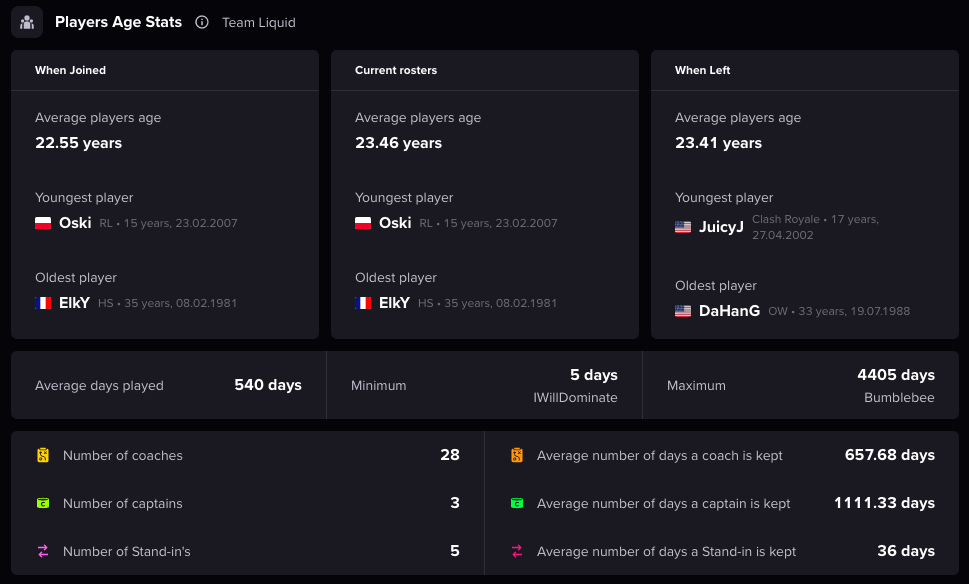

West Suffolk Wolves
Season record: 18W - 6L | Recent streak: W W L W W | Current ranking: #3 (Regional)
Short summary: The squad shows consistent improvement in coordinated pushes and utility usage, particularly on mid-round setups. Focus this month: tightening defensive rotations.
| Player | K/D | Accuracy | Win Rate | Role |
|---|---|---|---|---|
| Alex "Striker" Thompson | 1.68 | 42% | 58% | Entry Fragger |
| Jordan "Apex" Williams | 1.35 | 39% | 65% | IGL |
| Casey "Nova" Johnson | 1.52 | 41% | 60% | Support |
| Marcus "Echo" Davis | 1.28 | 36% | 63% | Flex |
| Ryan "Phoenix" Miller | 1.45 | 40% | 61% | AWPer |
K/D trend • Accuracy comparison • Win rate over time
